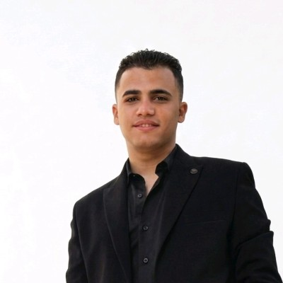

SALES PERFORMANCE · SAMPLE DATARevenue by month
Excel · Dashboard
Retail Sales Performance
A dashboard concept for tracking sales by product, month, and region, with a focus on clear KPIs and practical comparisons.
ExcelPivotTablesData cleaningKPIsData Analytics · Excel · Data Science · AI
Hi, I’m Abdelrhman. I’m building my skills in data analytics and AI—using curiosity, structured thinking, and hands-on practice to turn raw information into useful insight.
Explore my work ↘Get in touch ↗
Independent practice concepts designed to explore useful business questions and build end-to-end analytical thinking. All data, results, and scenarios are illustrative.
A dashboard concept for tracking sales by product, month, and region, with a focus on clear KPIs and practical comparisons.
ExcelPivotTablesData cleaningKPIsAn exploratory analysis concept using fictional customer data to surface purchasing patterns and frame actionable questions.
PythonpandasVisualizationStorytellingA learning exercise in preparing historical data, comparing a simple baseline, and evaluating a first forecasting model.
Pythonscikit-learnTime seriesEvaluationI’m actively developing these skills through study and hands-on practice. This portfolio will grow alongside my projects.
Data organization · formulas · PivotTables · dashboards
Core syntax · notebooks · data manipulation with pandas
Machine learning foundations · model concepts · responsible use
Cleaning · exploration · pattern finding · clear communication
Supervised learning concepts · train/test thinking · evaluation
Choosing useful visuals · explaining findings for decisions
I’m an aspiring data analyst interested in the space where data, business questions, and AI meet. I enjoy breaking a big question into smaller pieces, exploring the evidence, and communicating what matters clearly.
I’m early in my journey, so I focus on learning fundamentals and showing my thinking honestly. The projects here are practice concepts; I’m looking forward to applying what I learn to real challenges.
A repeatable learning workflow helps keep analysis focused, careful, and easy to explain.
Clarify the goal, audience, and what a useful answer would look like.
Inspect structure, check quality, and document assumptions.
Use suitable methods and visuals to test ideas and compare trends.
Summarize findings, limitations, and next steps clearly.
I’m open to internships, entry-level opportunities, learning projects, and thoughtful conversations.